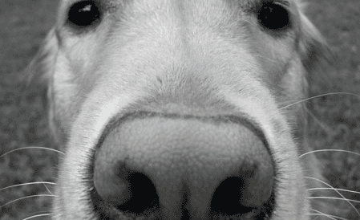
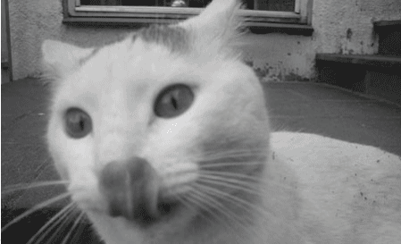

Dogs Have Better Noses
Dogs can discriminate odors at concentrations nearly 100 million times
lower than humans can. The wet nose is essential for determining the
direction of the air current containing the smell. Cold receptors in
the skin are sensitive to the cooling of the skin by evaporation of the
moisture by air currents.

Cats Have Better Tongues
Cats are known for their cleanliness, spending many hours licking their
coats. The cat's tongue has backwards-facing spines about 500 micrometers
long, which are called papillae. These are quite rigid, as they contain
keratin. These spines allow cats to groom themselves by licking their
fur, with the rows of papillae acting like a hairbrush.